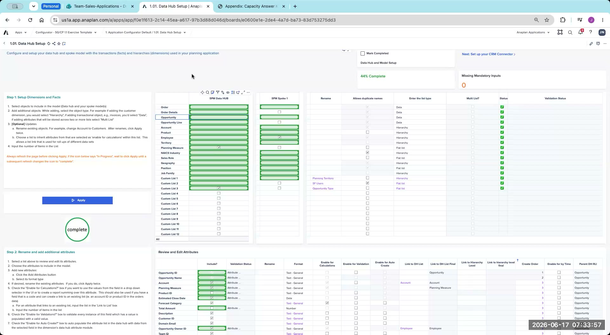

Appendix: Capacity Configurator Answer Key
Facilitator reference — review after the lab exercise, not before
This answer key is intended for facilitator-led debrief after the lab exercise is complete. Review your own answers first, then compare with the key during the group debrief session.
Each section below shows what the configurator page should look like when the Capacity lab is correctly completed against the CloudWorks case study. Use these reference captures to verify your own configuration during debrief.
Page 1.01 — Data Hub Setup
Establishes the dimensions, facts, and attributes the entire app reads from. Step 1 selects which objects (Order, Opportunity, Account, Product, Territory, Employee, Geography, NAICS Industry, Sales Role, etc.) flow into the Data Hub and Spoke models; Step 2 renames each attribute and sets Format, Validation, and Enable for Calculations so downstream configurator pages can reference them.

Page 1.2.1 — GTM Headcount Data Guided Setup
Configures the historical headcount and ramping-profile dimensionality. Ramp profiles are dimensioned by Region T3 and Sales Role; the employee/position view captures Role Grade and Sales Role as the attributes worth tracking; current-role analysis reports at Region T3 with Tenure Profile.
![1.2.1 GTM Headcount Data Guided Setup answer key — section 1.1 Headcount Data with Step 1 Configure Ramping Profile Dimensionality showing Region T3 and Sales Role Flat in first two dimensions and Historical Ramping Profile Assumptions; Step 2 Select Attributes to View by Employee and Position with Role Grade and Sales Role attributes selected; section 1.2 Current Role Analysis with Step 3 Configure Reporting Dimensionality showing Region T3 and Tenure Profile and FTE Reporting Metrics by Sales Role](../img/answer-keys/cap-1-2-1.png)
Page 1.2.2 — GTM Top-Down HC Target Setting Guided Setup
Configures the top-down headcount target-setting workflow. Decides whether to use Role Grade (CloudWorks answer: no — uses the "SC Tops Down HC Planning no RG" method), defines three planning scenarios (Best / Most Likely / Worst), selects which sales-hierarchy levels (Total Territory through Region T3) are available for HC allocation, and sets Job Family L2 as the lowest level for job-family allocation.
![1.2.2 GTM Top-Down HC Target Setting Guided Setup answer key — Step 0 Select if not using the Role Grade Dimension with SC Tops Down HC Planning no RG; Step 1 Create Scenarios for Top-Down Process with Scenario 1, Scenario 2, Scenario 3 and a 2.1 Global HC Target Setting board with Best Case, Most Likely, Worst Case columns and Input Global Planned Headcount by Scenario; Step 2 Select Sales Hierarchy Levels for Allocation with Total Territory, Geo T1, Area T2, Region T3 selected through Level 4 and Region T5 unselected; Step 3 Select Lowest level of job family for Allocation set to Level 2 Job Family L2](../img/answer-keys/cap-1-2-2.png)
Page 1.2.3 — GTM Coverage & Workload Capacity Guided Setup
Sets the coverage-analysis and workload-planning granularity. Segment-to-role coverage maps at Geo T1 (Level 1); sales-target imports at Region T3 (Level 3) with Account Segment as the cut; workload coverage inputs are entered at Geo T1.
![1.2.3 GTM Coverage and Workload Capacity Guided Setup answer key — section 2.2 Coverage Analysis with Step 1 Select Segment to Role Mapping Granularity showing Segment to Role Mapping Territory Level set to Level 1 Geo T1 and Role Coverage Analysis board; Step 2 Select Sales Target Dimensions with Account Segment dimension and Sales Target Import Level set to Level 3 Region T3 plus Sales Target Import board; section 2.3 Workload Coverage Capacity Planning with Step 3 Select Workload Coverage Input Granularity set to Level 1 Geo T1](../img/answer-keys/cap-1-2-3.png)
Page 1.2.4 — GTM Bottom-Up Hiring Plan Guided Setup
Configures the bottoms-up hiring-plan approval workflow and the optional Operational Workforce Planning (OWP) integration level. Approvals roll up at Area T2 (Level 2); if the customer integrates OWP, headcount data imports at Region T3 (Level 3).